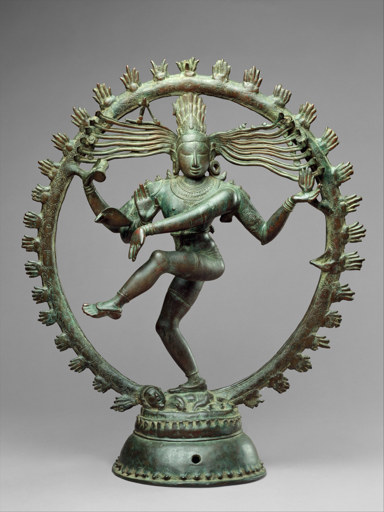
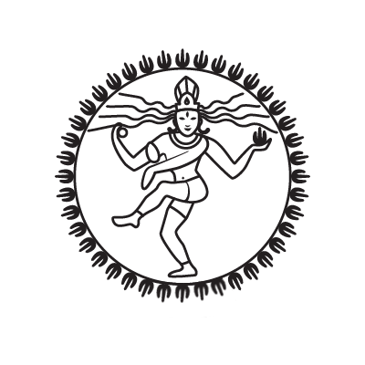

THE IDEA

There is a famous image of Śiva dancing in South Asian art in which he is represented as surrounded by a circle of fire. These sculptures are meant to convey the dyanmism of his dance, leveraging the flames to convey a sense of active destruction and outward emanation of the deity's power. As they're often cast in bronze, these sculptures are, unsurprisingly, entirely static in the literal sense. However, given how strongly they're meant to imply movement, I thought it would be fun to imagine it as a kinetic sculpture in which the fire actually moves. How does this change the aesthetic effect of the image, by actually having it in motion rather than imagining it so?
The most challenging part of this project was just figuring out how to arrange each of the parts in a manner that's physically possible. The circle of flames is not attached to Śiva, meaning the two had to be separate parts. Further, they both needed to be elevated so as to not get stuck on the ground surface of wherever the sculpture is placed. Most of the problems were with the circle - it needs to attach to a motor in the center, but in most configurations, the spokes of the 'wheel' it creates would crash into whatever platform I placed it on. To solve this, I created two separate platforms: one for Śiva, and another for the motor and its wheel of flame. The motor was placed on the edge of its own platform and projected the wheel outward, which hovered over empty space between the two platforms.
THE DESIGN

To create the design for the laser-cutter, rather than making it by hand in Fusion (doubtless a herculean task given how detailed Śiva is), I instead found an openlicense lineart of the deity opened it in Photoshop to detached the circle from Śiva. Having done so, I uploaded it to Illustrator and vectorized it. Finally, I uploaded to Fusion and cleaned it up so that it would only lasercut the outline of each part of the image.I resized the circle and deity to my desired dimensions (circle ~6in in diamter, deity ~4in in height), produced the platform, and prepared to cut it using cardboard.